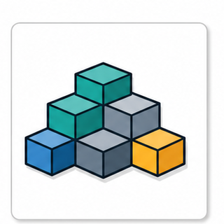
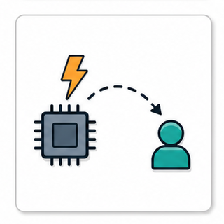

Keys: Left/Right or PageUp/PageDown to move, Home/End to jump, S to toggle slideshow, F for fullscreen, Z for fit/fill, Esc to exit.
Queue Model and Producer-Consumer Design
A FreeRTOS queue is not just a container. It combines copy-by-value communication, bounded buffering, and blocking behavior that changes scheduling.
This module prepares students to reason about queue length, item size, timeout, ownership, and producer-consumer pressure before using advanced queue patterns.
Module Contract
- Define queue vocabulary before using queue APIs.
- Explain fixed length, fixed item size, copy-in, and copy-out behavior.
- Treat send and receive as scheduling points when queues are full or empty.
- Use Tutorial 09 and Kernel Book Chapter 5 figures as source-backed evidence.
01
Course Position
Module 05 explained that kernel objects require storage. Module 06 focuses on one of the most important objects: the queue, a bounded communication object that also controls task blocking.

CommunicationA sender copies an item into the queue; a receiver copies it out.
BlockingSend can block when full; receive can block when empty.

SizingQueue length and item size create a real memory cost.
Queue design sits at the intersection of data flow, scheduling, and memory sizing.
02
Why Shared Variables Are Not Enough
A shared variable can transfer data, but it does not automatically provide ownership transfer, buffering, or waiting semantics.
Shared variable
- Fast and simple for a single value.
- Needs explicit protection for concurrent access.
- Usually does not record missed updates.
Queue
- Stores a bounded sequence of items.
- Copies data at send and receive boundaries.
- Can block tasks when the buffer is full or empty.
Design question
- Do we need every event?
- Do we need latest value only?
- Do we need payload data or only a signal?
A queue is useful when data transfer and waiting behavior belong together.
03
Terminology Before API Calls
Queue APIs are easier to understand when these words are already precise.
| Term | Meaning in this module |
|---|
| Queue | A FreeRTOS kernel object that stores a fixed number of fixed-size items. |
| Queue length | Maximum number of items the queue can hold. |
| Item size | Number of bytes copied into or out of the queue for each item. |
| Sender | A task or ISR context that writes an item into the queue using the correct API family. |
| Receiver | A task or ISR context that reads an item from the queue using the correct API family. |
| Block time | Maximum time a task is willing to wait when the queue operation cannot complete immediately. |
A queue term should tell students whether we are talking about capacity, data shape, caller context, or waiting policy.
04
Queue as a Bounded Copy Buffer
FreeRTOS queues store items by copying bytes into an internal buffer. The queue does not store arbitrary object references unless the item itself is a pointer.
Sender taskowns a local item before send
Item 0
Item 1
empty
empty
empty
Receiver taskgets a copied item after receive
Copy-by-value is safer for small messages because the sender's local variable can go out of scope after the send completes.
The default queue mental model is copy-in and copy-out.
05
Fixed Length and Fixed Item Size
A queue is sized at creation. Later sends must match the item size that was chosen at creation time.
xQueueCreate( uxQueueLength, uxItemSize )xQueueCreateStatic()QueueHandle_t
Length
- Controls how many items can wait.
- Absorbs producer-consumer speed mismatch.
- Consumes memory even when slots are empty.
Item size
- Controls how many bytes are copied.
- Should match the actual message type.
- Large structs increase copy cost and memory use.
Handle
- Represents the queue object.
- Must be checked after creation.
- Is passed to send and receive APIs.
Queue capacity is a memory decision and a behavior decision at the same time.
06
Queue Memory Sizing
Queue creation allocates internal control storage and an item buffer sized by length and item size.
| Design value | Effect | Failure mode if wrong |
|---|
uxQueueLength | Number of queued items | Too short: frequent full queue; too long: unnecessary RAM use |
uxItemSize | Bytes copied per item | Wrong size: truncated data, wasted RAM, or incorrect struct interpretation |
| Allocation policy | Dynamic heap or static application buffer | Creation failure or hard-to-review storage ownership |
A queue should be sized from expected traffic and message shape, not from a random example.
07
Kernel Book Figure 5.1: Queue Operation
Teaching Focus
- Follow the head and tail movement conceptually.
- Ask which slots are occupied after each write.
- Ask what the receiver obtains after each read.
- Connect the visual to fixed length and copy-by-value behavior.
Source: FreeRTOS Kernel Book, Figure 5.1.
This figure is the base visual for queue storage behavior.
08
xQueueCreate()
xQueueCreate() creates a queue dynamically. The returned handle is NULL if the queue cannot be created.
QueueHandle_t xLogQueue;
xLogQueue = xQueueCreate(
8,
sizeof( LogMessage_t ) );
configASSERT( xLogQueue != NULL );
The two creation arguments should be explained as traffic capacity and message shape.
Queue creation is where design assumptions become memory allocation.
09
xQueueCreateStatic()
Static queue creation makes the queue storage visible in application source.
static StaticQueue_t logQueueControl;
static uint8_t logQueueStorage[
LOG_QUEUE_LENGTH * sizeof( LogMessage_t ) ];
xLogQueue = xQueueCreateStatic(
LOG_QUEUE_LENGTH,
sizeof( LogMessage_t ),
logQueueStorage,
&logQueueControl );
Static queue creation is useful when memory ownership must be explicit.
10
Send API Family
The common task-context send APIs differ mostly by insertion position and naming convention.
xQueueSend()xQueueSendToBack()xQueueSendToFront()xTicksToWait
To back
- Normal FIFO behavior.
- Most common message queue use.
- Preserves producer order.
To front
- Higher urgency item can be placed ahead.
- Can surprise receiver ordering.
- Use with a clear policy.
Block time
- 0 means do not wait.
- A finite value means wait up to that many ticks.
- portMAX_DELAY may wait indefinitely if configured appropriately.
A send call is both a data operation and possibly a scheduling decision.
11
Receive API
xQueueReceive() copies an item out of the queue. If the queue is empty, the calling task can block.
xQueueReceive()pvBufferxTicksToWaitpdPASSpdFALSE
When an item exists
- The item is copied into the receiver buffer.
- The item is removed from the queue.
- A task waiting to send may become Ready.
When empty
- With timeout 0, receive fails immediately.
- With finite timeout, the task can enter Blocked state.
- With indefinite wait, the task depends on a future send.
Receiving from an empty queue is a controlled way to wait for data.
12
Queue Full: Sender Blocking
A full queue means there is no slot available for the copied item.
Producerwants to send one more item
Consumermust receive before space appears
Producer
send
Blocked if willing to wait
A full queue converts producer pressure into blocking or data-drop policy.
13
Queue Empty: Receiver Blocking
An empty queue means there is no item available to copy out.
Producerhas not produced yet
empty
empty
empty
empty
empty
Consumerwants an item
A receiver that blocks on an empty queue is not spinning. It is removed from CPU selection until data arrives or timeout expires.
An empty queue can be a clean synchronization point.
14
Timeout Policy
The timeout argument is a design policy, not just an API parameter.
| Timeout | Behavior | Typical meaning |
|---|
0 | Try once and return immediately | Drop, poll, or fail-fast policy |
| finite ticks | Wait up to a bounded time | Backpressure with deadline awareness |
portMAX_DELAY | Wait indefinitely when indefinite blocking is enabled | Consumer task that exists only to process incoming data |
Timeouts define how the system behaves under pressure.
15
Producer-Consumer Pattern
A producer-consumer queue decouples the rate of data production from the rate of data processing within a bounded capacity.
Producer
- Samples data.
- Builds a small message.
- Sends to the queue with a chosen timeout.
Queue
- Holds a bounded backlog.
- Preserves item boundaries.
- Provides blocking pressure.
Consumer
- Receives and processes messages.
- Can block while no data exists.
- May be lower priority if processing is less urgent.
Producer-consumer design is about rate mismatch and ownership handoff.
16
Queue Depth as Backpressure
A longer queue can absorb bursts, but it can also hide overload and increase memory use.
Length 1Very small buffer. Quickly reveals producer-consumer mismatch.
Length 3Small burst tolerance. Good for teaching timing pressure.
Length 10Larger backlog. More memory and potentially more latency.
Unbounded wishNot available. Embedded systems need bounded design.
A queue that never fills during a light demo may still fail under burst load.
Queue length trades RAM for burst absorption and delayed overload visibility.
17
Item Shape: Scalar, Struct, or Pointer
The item type determines copy cost and ownership risk.
| Item type | Advantage | Risk |
|---|
| Small scalar | Cheap copy, simple meaning | May be too limited for real messages |
| Small struct | Clear message fields, stable ownership | Copy cost grows with struct size |
| Pointer | Cheap queue item, supports large buffers | Requires explicit lifetime and ownership rules |
Copy-by-value is safe for small messages; pointer queues need ownership discipline.
18
Kernel Book Figure 5.4: Struct Messages
Teaching Focus
- A queue item can be a structured message.
- The sender and receiver must agree on the item layout.
- Struct fields make logs and source reading clearer.
- Large structures may motivate pointer queues in Module 07.
Source: FreeRTOS Kernel Book, Figure 5.4.
Structured messages are a good step between toy integers and real embedded data.
19
xQueueSend() Return Value
A send call can fail when the queue remains full for the chosen timeout.
BaseType_t ok;
ok = xQueueSend(
xLogQueue,
&message,
pdMS_TO_TICKS( 10 ) );
if( ok != pdPASS )
{
/* Drop, count, retry later, or signal overload. */
}
Ignoring send failure hides overload.
20
xQueueReceive() Return Value
A receive call can fail when no item arrives before the timeout expires.
LogMessage_t message;
if( xQueueReceive(
xLogQueue,
&message,
portMAX_DELAY ) == pdPASS )
{
process_log_message( &message );
}
A receive loop should make its waiting policy explicit.
21
uxQueueMessagesWaiting()
uxQueueMessagesWaiting() observes queue depth, but it is a snapshot of a changing system.
uxQueueMessagesWaiting()uxQueueSpacesAvailable()queue registrytrace tools
Useful for
- Debug logs
- Teaching queue pressure
- Health monitoring with care
Caution
- Depth can change immediately after measurement.
- Polling depth is not a replacement for blocking receive.
- Instrumentation can change timing.
Better evidence
- Depth trend
- Send failure count
- Receive timeout count
- Trace timeline
Queue depth is evidence, not a synchronization mechanism by itself.
22
Kernel Book Figure 5.3: Execution Sequence
How to Read It
- Mark where sends happen.
- Mark where receives happen.
- Identify when a task is Running versus Blocked.
- Connect queue events to scheduler choices.
Source: FreeRTOS Kernel Book, Figure 5.3.
Queue examples should be read as both data movement and scheduling behavior.
23
Tutorial 09 Source Reading
Tutorial 09 is the main source-reading exercise for this module.
Creation
- Find xQueueCreate().
- Record queue length.
- Record item size.
- Check handle creation.
Sender tasks
- Find xQueueSend().
- Identify message value or struct.
- Check timeout argument.
- Check returned status.
Receiver task
- Find xQueueReceive().
- Identify receive buffer.
- Check wait policy.
- Explain output order from blocking behavior.
Read Tutorial 09 by queue lifecycle: create, send, receive, observe.
24
Tutorial 09 Configuration Reading
Queue behavior also depends on the surrounding project configuration.
configTOTAL_HEAP_SIZEconfigSUPPORT_STATIC_ALLOCATIONconfigUSE_PREEMPTIONconfigUSE_TIME_SLICINGconfigQUEUE_REGISTRY_SIZE
Students should connect queue creation to heap size from Module 05, and connect queue blocking to scheduler behavior from Modules 03 and 04.
Tutorial reading should connect modules rather than isolate API calls.
25
Queue Registry for Debugging
The queue registry can give queues human-readable names in debugging and trace tools when configured.
Use
- Name important queues.
- Improve trace readability.
- Help distinguish multiple QueueHandle_t values.
Limit
- It does not change queue behavior.
- Registry size is configured.
- It is a debugging aid, not a design substitute.
configQUEUE_REGISTRY_SIZEvQueueAddToRegistry()
Names make runtime evidence easier to interpret.
26
Blocking and Priority Interaction
A queue operation can move a task out of Ready state, giving another task the CPU.
Producer
send
continues
blocks if full
Consumer
blocked if empty
receive
process
Scheduler
selects highest Ready task
after unblock
Queue APIs are scheduling points whenever they block or unblock tasks.
27
Producer Faster Than Consumer
If the producer is consistently faster than the consumer, queue depth only delays the problem.
Short burst
- Queue absorbs temporary mismatch.
- Consumer catches up later.
- Depth returns to normal.
Sustained overload
- Queue eventually fills.
- Send blocks or fails.
- Latency grows before failure becomes visible.
Design responses
- Reduce producer rate.
- Increase consumer throughput.
- Drop or compress data deliberately.
- Change priority only with evidence.
Queue length cannot fix sustained throughput mismatch.
28
Consumer Faster Than Producer
If the consumer is faster, it usually blocks on an empty queue and consumes no CPU while waiting.
Good behavior
- Consumer sleeps while no data exists.
- CPU is available for other Ready tasks.
- Latency can be low when new data arrives.
Watch for
- Too high consumer priority doing unnecessary work.
- Polling instead of blocking.
- Timeouts that create noisy logs.
A blocking receiver is often better than a polling loop.
29
Data Loss Policy
A full queue forces the design to state what should happen to new data.
| Policy | How it appears | When it fits |
|---|
| Block producer | Send waits for space | Producer can safely wait and data must not be lost |
| Drop newest | Send timeout 0 fails and item is discarded | Fresh data is frequent and overload should be counted |
| Drop oldest | Application removes or overwrites older item | Latest data matters more than full history |
| Signal overload | Failure counter, event, or diagnostic log | System needs visibility rather than silent loss |
No queue is complete until its full-queue policy is explicit.
30
Copy-by-Value and Local Variables
Because a queue copies data, sending the address of a local variable is different from sending the value of that variable.
Send value
- Queue stores a copy of the bytes.
- Sender local variable may go out of scope.
- Receiver sees the copied message.
Send pointer
- Queue stores the pointer value.
- Pointed data must remain valid.
- Ownership and lifetime must be documented.
Many queue bugs are actually lifetime bugs caused by pointer queue misuse.
A pointer in a queue is still copied by value; the pointed object is not copied.
31
Object Selection Map
Where Queue Fits
- Choose a queue when you need payload data and buffering.
- Choose a semaphore when the main need is signaling or counting.
- Choose a mutex when ownership of a shared resource matters.
- Choose a task notification when a single receiver needs a lightweight event.
Generated shared infographic: object_selection_map.png
The queue is powerful, but it should not become the answer to every synchronization problem.
32
Common Mistakes
These are the bugs students should learn to predict.
Wrong item size
- Using sizeof(pointer) when the queue should store a struct.
- Changing struct definition without reviewing queue creation.
- Assuming the queue knows the real type.
Ignored return
- Send failure hidden during overload.
- Receive timeout treated as valid data.
- Creation handle not checked.
Bad lifetime
- Queueing pointer to stack data.
- Reusing a buffer before the receiver owns it.
- No buffer ownership rule.
Queue bugs are usually design contract bugs.
33
Source Reading: queue.c
The goal is not to read the entire file. The goal is to recognize the behavior path behind queue operations.
Creation path
- Queue control structure.
- Item buffer storage.
- Length and item size recorded.
Send path
- Check space.
- Copy item into queue storage.
- Unblock waiting receiver if appropriate.
Receive path
- Check item count.
- Copy item out.
- Unblock waiting sender if space appears.
Read queue.c by lifecycle: create, send, receive, unblock.
34
Conceptual Send Path
A simplified source-reading path for task-context send.
xQueueSend()
-> check queue handle and item pointer
-> enter critical section
-> if space exists, copy item into queue storage
-> update queue pointers and message count
-> unblock a task waiting to receive if needed
-> if no space, block sender up to timeout
-> return pdPASS or failure
A conceptual path makes the real source easier to enter.
35
Conceptual Receive Path
A simplified source-reading path for task-context receive.
xQueueReceive()
-> check queue handle and receive buffer
-> enter critical section
-> if an item exists, copy item out
-> update queue pointers and message count
-> unblock a task waiting to send if needed
-> if empty, block receiver up to timeout
-> return pdPASS or failure
Send and receive are symmetric around space and item availability.
36
Trace Evidence for Queue Behavior
A queue design should produce observable evidence during debugging.
Data evidence
- Message fields in logs.
- Sequence number.
- Producer timestamp.
Pressure evidence
- Queue depth trend.
- Send failure count.
- Receive timeout count.
Scheduling evidence
- Task state changes.
- Trace timeline.
- Consumer wake-up latency.
Instrumentation should reveal whether the queue is healthy, overloaded, or idle.
37
Mini Design: UART Logger Queue
A common teaching example is a queue from worker tasks to a lower-priority logger task.
| Decision | Example choice | Reason |
|---|
| Message item | LogMessage_t struct | Timestamp, source, severity, and short payload are copied safely |
| Queue length | 16 | Absorbs short bursts without hiding sustained overload too long |
| Producer timeout | 0 or short finite timeout | Control tasks should not block indefinitely on logging |
| Consumer priority | Lower than control work | Logging should use leftover CPU time |
A concrete design table turns API choices into system reasoning.
38
Mini Design: Sensor Samples
A sample queue between a periodic sensor task and a processing task must account for rate and item size.
Sampling rate
- How often does the producer send?
- What burst size is possible?
- Can the producer block safely?
Processing rate
- How long does the consumer take?
- Can it fall behind?
- What priority should it have?
Data policy
- Are all samples required?
- Is latest value enough?
- Should overload be counted or visible?
Sensor queue design starts from rates, not from a favorite queue length.
39
When Not to Use a Queue
A queue is a strong default for payload-bearing communication, but it is not always the simplest object.
Only a signal
- Binary semaphore or direct task notification may be lighter.
- No payload storage is required.
- A single receiver simplifies the design.
Shared resource
- A mutex expresses ownership.
- A queue does not automatically protect a shared peripheral.
- Gatekeeper design is a different pattern.
Byte stream
- Stream buffer may fit UART-like bytes.
- Message buffer may fit framed packets.
- Module 14 revisits this distinction.
Object choice should communicate design intent.
40
Project Boundary Check
Compact self lab for this module.
Length experiment
- Run Tutorial 09 with queue length 1, 3, and 10.
- Record output and queue pressure symptoms.
- Explain whether latency or loss changes.
Timeout experiment
- Change send timeout from 0 to finite wait.
- Predict producer behavior when full.
- Count send failures or blocking points.
Struct experiment
- Send a small struct item.
- Print each field in the receiver.
- Confirm item size and struct layout match.
The lab report should explain queue behavior with length, item size, and timeout vocabulary.
41
Review Questions
These questions check whether students can reason about queue design.
Mechanism
- Why does a queue copy data rather than just record a variable name?
- What state can a task enter when receiving from an empty queue?
- Why does queue length affect both memory and latency?
Design
- When should a producer drop data instead of block?
- Why is queueing a pointer to a local variable dangerous?
- What evidence would show that a consumer is too slow?
A good answer names data shape, waiting policy, and failure evidence.
42
Bridge to Module 07
Module 07 keeps the queue idea but expands its use: pointer queues, mailbox behavior, queue sets, and ISR queue APIs.
Pointer queuesCopy a pointer value, but document buffer ownership.

ISR queueUse FromISR APIs because interrupt context cannot block.

AlternativesCompare queue with notification, semaphore, and mailbox behavior.
Module 06 is the base model; Module 07 adds specialized patterns and caller contexts.
43
References and Further Reading
References used in this module are separated from optional deeper reading.
References Used
- FreeRTOS Kernel Book, Chapter 5, Queue Management, especially basic queue behavior, blocking send/receive, and Example 5.1.
- FreeRTOS Kernel Book, Chapter 5 figures: Figure 5.1, Figure 5.3, and Figure 5.4.
- Lab Project FreeRTOS Tutorials, Tutorial 09, Creating and using FreeRTOS queues to send messages between tasks.
- FreeRTOS Kernel source:
queue.c queue creation, send, receive, and task unblocking paths.
Further Reading
- FreeRTOS API reference: queue management APIs, including
xQueueCreate(), xQueueCreateStatic(), xQueueSend(), xQueueReceive(), and uxQueueMessagesWaiting().
- FreeRTOSConfig.h reference:
configQUEUE_REGISTRY_SIZE, configSUPPORT_DYNAMIC_ALLOCATION, configSUPPORT_STATIC_ALLOCATION, and heap sizing options.
- FreeRTOS Kernel Book, Chapter 3, Heap Memory Management, for queue allocation cost and static queue storage context.
- Module 07 preview reading: pointer queues, mailbox behavior, queue sets, and ISR queue APIs.
References should let students trace every major queue claim to source or official documentation.
44